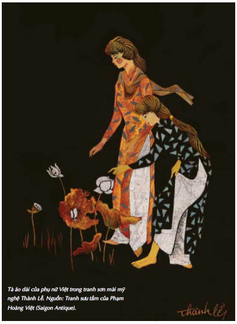

Cáo... Jacob nghe thấy tiếng cô, cảm thấy đôi bàn tay cô. Nhưng trong cơ thể anh sự sống và cái chết đang chiến đấu với nhau, và cái chết đang thắng thế. Nó đang lan rộng trong anh, dù da của anh trông không còn giống da của một ông lão nữa. Cái giá của Hắc Tiên vẫn chưa được trả xong.
Đi thôi. Tất cả đã qua rồi.
“Không!” Cáo lay vai anh. “Jacob.”
Anh mở mắt ra.
Gã lai đứng cách anh chỉ vài bước chân. “Kẻ Tàn Sát Phù Thủy như một người cha đáng mến...” Gã vuốt ve cánh cung mạ vàng. “Vớ vẩn. Ta đã chẳng bao giờ tin vào câu chuyện về phát bắn thứ ba.”
Mũi tên nằm sẵn trong nó cũng đen sì như làn da của gã. Gã gật đầu ra hiệu cho nam nhân ngư. “Mang cô ta tránh ra.” Cáo cố rút con dao ra, nhưng nam nhân ngư đã tước nó trên tay cô, và Jacob quá yếu ớt để nhấc tay lên bảo vệ cô. Anh cảm thấy sự sống đang rời bỏ anh qua từng hơi thở. Cáo sẽ thế nào đây? Đó là tất cả những gì anh có thể nghĩ đến trong khi gương mặt của gã lai đang mờ đi trước mắt anh. Bọn chúng sẽ làm gì cô? Liệu nam nhân ngư sẽ kéo cô ấy xuống một ao hồ nào đó, hay gã Goyl sẽ bắn cô? Không, cô sẽ chạy thoát. Bằng một cách nào đó...
“Ngươi hãy nhìn cánh cung đi. Đúng như ta đã nghĩ. Làm bằng gỗ cây trăn. Ngươi có biết thế nghĩa là gì không?” Jacob nghe tiếng gã lai như vẳng lại từ nơi rất xa. “Không. Các ngươi đã quên họ. Nhưng những người Goyl nhớ rất rõ. Họ sống sâu dưới lòng đất, sâu hơn cả người Goyl bọn ta, trong những lâu đài bằng bạc. Yêu tinh gỗ trăn. Bất tử... ranh ma... và là những bậc thầy chế tạo các loại vũ khí ma thuật. Tiên đã hủy diệt hầu hết những món vũ khí ấy, nhưng đâu đó ở Katalonien vẫn còn một thanh kiếm do họ chế tạo. Loại phép thuật này luôn là thế: món vũ khí sẽ mang cái chết đến cho kẻ thù của chủ nhân nó, và mang sự sống đến cho những người thân của họ. Ta đã nghĩ ngay ra rằng chiếc nỏ là một trong những món vũ khí do yêu tinh gỗ trăn chế tạo, từ lần đầu tiên nghe câu chuyện về phát bắn thứ ba.” Gã Goyl vuốt ve phần gỗ ánh đỏ. “Ai mà biết được... Có lẽ Guismund thật sự muốn giết con trai mình. Lúc đó ông ta thực sự đã mất trí, rốt cuộc thì ông ta đã uống máu phù thủy trong nhiều năm. Nhưng chiếc nó đã không cho phép điều đó.”
Gã bước sang bên cạnh Jacob.
“Bằng cách nào anh ta mở được cánh cửa?” gã hỏi Cáo. “Rất dễ dàng, đúng không? Nó để anh ta qua một cách dễ dàng.”
Cáo không trả lời.
Gã lai giương cung ra.
“Chính bản thân hắn là lời giải thích cho ta. Ma thuật thời gian chỉ giúp người ta hồi sinh khi bắt được một người có cùng dòng máu. Ta đương nhiên không được xem là có cùng dòng máu với Guismund, nhưng ông ta đã sống lại. Điều đó có nghĩa là...”
Jacob hầu như không còn nghe những gì gã Goyl nói. Tim anh đập quá mạnh, hơi thở anh khó nhọc... những nỗ lực cuối cùng của cơ thể anh để níu giữ sự sống.
“Vì lẽ đó mà cánh cửa để anh ta đi qua. Vì lẽ đó mà anh ta nhanh hơn ta!” Giọng khàn khàn của Nerron vang rất to, như thể gã muốn tự thuyết phục mình rằng gã chính là chủ nhân hợp pháp của chiếc nỏ. Gã bắt gặp mình đang cố tin vào điều đó, và những lời kế tiếp lại nghe ra vẻ nhạo báng và lạnh lẽo như thường lệ.
“Vâng, ai mà ngờ được chứ,” gã nói, “Jacob Reckless mang dòng máu của Kẻ Tàn Sát Phù Thủy trong huyết quản.” Jacob sẽ cười thật to nếu anh còn đủ sức để cười. “Vớ vẩn…” Anh gần như không thốt nổi nên lời.
“Thật sao?” Nerron bước lùi lại và giơ cao chiếc nỏ.
“Hãy để cho tôi bắn! Làm ơn!” Tiếng kêu tuyệt vọng của Cáo cắt ngang những âm thanh trong đầu Jacob.
“Không.” Nerron nhắm bắn. “Làm sao chúng ta chứng minh được việc này không phải vì tình yêu?”
Tiếng thét của Cáo đã bị bàn tay của nam nhân ngư chặn lại.
Và gã Goyl bắn.
Hắn ta nhắm rất chuẩn. Mũi tên ghim chính xác vào ngực của Jacob, nơi máu của anh hằn rõ dấu bướm ma trên áo. Cơn đau làm tim anh ngừng đập. Chết. Người chết rồi, Jacob. Nhưng anh nghe thấy tiếng tim mình. Mạnh mẽ và không loạn nhịp. Đã rất lâu rồi nó không đập đều đặn như thế.
Anh mở mắt và nắm tay quanh mũi tên đang cắm vào ngực mình. Mỗi nhịp tim đập đều nhói đau, nhưng nó vẫn đập. Và vết thương không chảy máu.
Anh siết các ngón tay chặt hơn quanh mũi tên. Ngực anh như không còn cảm giác, và anh xoay xở rút mũi tên ra chỉ với một cú giật mạnh. Cơn đau bằng một nửa so với khi bị bướm ma cắn, và đầu mũi tên vẫn sạch bóng như thể anh rút nó ra từ gỗ chứ không phải từ da thịt anh.
Gã lai bước về phía anh và giật lấy mũi tên trên tay anh.
“Thả cô ta ra,” gã nói với nam nhân ngư.
Cáo run rẩy quỳ xuống bên cạnh Jacob. Vì giận dữ, vì sợ hãi, và kiệt sức. Anh muốn mang cô đi khỏi nơi này, thật xa khỏi căn phòng của tên yêu râu xanh và những tòa lâu đài bị phù phép.
Cáo sửng sốt nhìn anh khi anh đứng dậy. Làn da trên trái tim anh vẫn nguyên vẹn. Cả vết thương do bướm ma để lại cũng lành hẳn. Anh thấy mình trẻ lại như cái ngày anh cùng lão Chanute lần đầu tiên đi săn báu vật.
Gã lai nhìn anh dò xét với một nụ cười nhạo báng. “Đây ắt hẳn sẽ là một câu chuyện hay cho nhiều tờ báo: Jacob Reckless mang trong huyết quản dòng máu của Kẻ Tàn Sát Phù Thủy.”
Hắn ta kéo chiếc túi-giấu-đồ trùm lên cây nỏ và nhét luôn cả mũi tên vào đó.
Jacob liếc nhìn tấm gương. Có lẽ gã lai nói đúng. Thậm chí kể cả khi nó không hẳn đúng như gã nghĩ.
“Ngươi vẫn giữ ý định bán chiếc nỏ cho Vua Gù hay Louis đã phá hỏng cơ hội của cha hắn?”
Nói tiếp đi, Jacob. Hãy kéo dài thời gian.
Anh đã hứa với Dunbar.
Cáo nhìn anh.
Hai chọi hai.
“Ngươi ra giá thế nào? Một lâu đài? Một huân chương? Một tước hiệu?” Jacob liếc nhìn tấm gương một lần nữa. Cáo cũng nhận ra hành động của anh.
Chuyện gì sẽ xảy ra nếu anh tính toán sai? Đáng để thử một lần.
“Chúng ta có thể nói thế này...” Gã lai nhét chiếc túi-giấu-đồ vào túi. “Ngươi đã nhận được cái ngươi muốn. Ta sẽ nhận được cái ta muốn.”
“Ngươi nghĩ sao nếu ta trả cho ngươi giá cao hơn? Cao hơn tất cả những gì Wilfred xứ Albion hay những lãnh chúa ở phía Đông có thể trả?”
“Đó có thể là gì chứ? Ta có cả một tòa lâu đài chất đầy báu vật.”
“Báu vật!” Jacob nhún vai đầy khinh miệt. “Chớ có lừa ta. Cũng như ta, ngươi rất ít quan tâm đến chúng.”
Nerron dán mắt vào Jacob. Người Goyl quả quyết rằng chúng có thể đọc được ý nghĩ trên khuôn mặt của người trần như đọc một quyển sách. “Vậy cái ngươi nhắc đến là gì?”
“Thứ mà những nhà thuyết giáo luôn nhắc đến.”
Cái miệng mỏng của gã nở ra một nụ cười nhạo báng. “Cánh cửa dẫn đến thiên đường…”
“Ta sẽ không gọi nó là thiên đường.” Jacob cảm thấy sự sống vừa được giành lại của anh như một thứ thuốc phiện. Anh đã lừa được Thần Chết, tại sao không lừa cả gã lai chứ? “Ta nghĩ ngươi nói đúng về dòng máu,” anh nói. “Nhưng nó không liên quan đến vấn đề họ hàng. Chỉ là Guismund và ta đến từ cùng một nơi.”
Nam nhân ngư phát ra một tiếng càu nhàu thiếu kiên nhẫn. Hắn chắc chắn đã vẽ ra trong đầu ngoại hình của cô gái mà hắn sẽ đặt kho báu của Guismund dưới chân nàng trong một hang động ẩm ướt nào đó. Hắn sẽ đọc từng mong ước trong mắt cô, nhưng sẽ không bao giờ thả cô đi.
“Họ sẽ nhanh chóng đến đây thôi!” Eaumbre thì thầm. “Những người lùn... quân đội của Vua Gù... những thợ săn kho báu tự cao tự đại.... Tất cả bọn họ sẽ đến, nhưng chúng ta vẫn còn kịp thời gian để vơ vét đấy!”
“Vậy sao ngươi còn đứng đó?” gã lại đáp trả. “Lấy thứ ngươi muốn và biến đi. Tất cả đều thuộc về ngươi!”
Nam nhân ngư nhìn Jacob dò xét bằng sáu con mắt dường như biết chính xác Cáo và anh đã săn được bao nhiêu đồng loại của hắn, và đã lấy mất bao nhiêu chiến lợi phẩm của bọn họ.
“Nếu ta là ngươi, ta sẽ không tin bọn họ đâu,” nam nhân ngư thì thầm với Nerron. Rồi hắn quay lưng đi và biến mất qua cánh cửa dẫn vào đại sảnh yết kiến nhà vua mà không nhìn lại lấy một lần.
Nerron giữ im lặng cho tới khi tiếng chân của nam nhân ngư đi xa hẳn. Gã quan sát các bức tranh xung quanh họ. Ánh mắt gã dừng lại ở cổng vòm bằng bạc nơi các kỵ sĩ của Guismund đang cưỡi ngựa tràn qua, và trong một khoảnh khắc Jacob nhìn thấy nỗi khao khát của một đứa trẻ trên khuôn mặt có vân. Nó khiến Jacob cảm thấy tiếc vì không thể cho gã Goyl thứ gã mong mỏi. Nhưng Dunbar nói đúng. Một số vật không bao giờ nên được tìm thấy, và khi ai tìm thấy chúng, người đó phải tìm ra chỗ giấu mới tốt hơn chỗ cũ.
Jacob bước qua xác của Guismund. Sức sống mới mà anh đang cảm thấy trong huyết quản đến từ đâu? Có phải một phần của nó thuộc về Kẻ Tàn Sát Phù Thủy? Đó không phải là một ý nghĩ dễ chịu.
“Ta chắc là ngươi cũng biết tất cả rõ như ta,” Jacob nói khi anh tiến về phía chiếc gương. “Những câu chuyện về nguồn gốc của Guismund. Rằng ông ta là con lai của một vị vua, con của một phù thủy, con trai của một tên quỷ tóc vàng... Nhưng không ai từng khám phá ra rằng, ông ta chỉ đơn giản là đến từ một thế giới khác.”
Jacob dừng lại trước tấm gương.
“Chính là nó,” anh nói. “Cánh cửa mà ngươi tìm kiếm.”
Khuôn mặt Nerron như hòa vào với mặt gương đen sẫm khi gã bước tới bên cạnh anh. Jacob thấy gã Goyl muốn tin lời anh đến thế nào. Anh đã học được cách đọc ý nghĩ trên khuôn mặt có vân.
“Chứng minh cho hắn thấy đi, Cáo,” anh nói.
Tất nhiên cô biết anh định làm gì. Không khó để đoán ra điều đó. Nhưng Cáo bước lùi ra xa khỏi tấm gương.
“Không. Anh làm đi.” Nỗi sợ hãi trong giọng cô không phải là giả vờ, và trong một khoảnh khắc, Jacob đã sợ rằng cô sẽ không đi theo anh. Nhưng Cáo cũng đã hứa với Dunbar, giống như anh.
Ánh mắt của Nerron bắt gặp ánh mắt anh qua mặt gương đen.
Kẻ giỏi nhất....
Jacob sẽ không phiền lòng trao lại danh hiệu ấy cho gã. Đáng tiếc là gã lai cũng muốn chiếc nỏ.
“Hãy làm đi,” Nerron nói. “Hãy chứng minh cho ta thấy.” Gã không nhận ra Cáo đang tiến gần đến gã. Tất cả trong mắt gã bây giờ là chiếc gương.
Jacob ấn tay lên mặt gương.